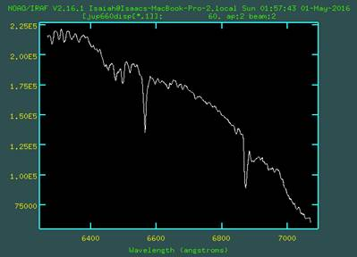
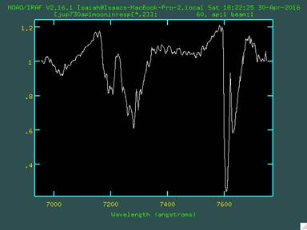
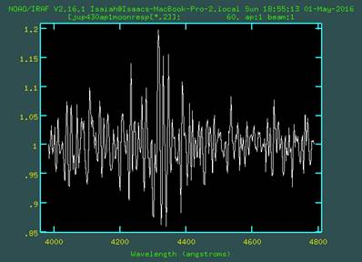

Atmospheric Composition of Jupiter
As Determined Through Spectroscopy
By Isaiah Tristan
Introduction
The main goal in this project is to determine the atmospheric composition of Jupiter.
The general plan going in was to take spectra of Jupiter and the Moon and compare the two.
Why a lunar spectrum?
When you take a spectrum of Jupiter, what you get is a spectrum from the sun with some parts absorbed out. This happens because the light from the Sun goes to Jupiter, goes through a bit of atmosphere and has wavelengths absorbed, and then gets reflected.
When you take a spectrum from the Moon, what you get is the spectrum from the Sun, since the moon does not have an atmosphere that would absorb wavelengths.
What this does for us in the end is it allows us to determine what part of the Sun’s spectra is being absorbed from Earth’s atmosphere, and what part is absorbed from Jupiter’s when we compare the two.
Methods
Data was collected from 10 P.M. to 1 A.M. on Friday, April 15th. The humidity was low, the temperature was about 70-75 degrees Fahrenheit, and the sky was mostly clear, with some periods of cloudiness.
The observing was done on the Rice University Campus using the 16-inch telescope in the Rice Observatory. A spectrograph CCD with high-resolution grating and a narrow slit (50 microns) was used to collect the spectra from Jupiter and the Moon.
Spectra from Jupiter and the Moon were taken at the following CCD micrometer settings: 430, 450, 470, 510, 550, 600, 660, 730, and 790.
Spectra from two lamps, a Hg lamp and a Neon lamp, were also taken. These were taken over the same ranges overall, but 430, 450, 470, 510, and 550 were taken on the Hg lamp and 600, 660, 730, and 790 were taken on the Neon lamp. The lamp spectra were collected in order to calibrate a wavelength solution which we could later apply to the Jupiter and Moon spectra.
Raw Data Visuals
Spectra of Jupiter (730 micrometer setting)
Spectra of the Moon (730)
Spectra of the Neon Lamp (730)
The next thing to do was extract 1D spectra from the 2D raw data pictures. Using the IRAF task apall, I extracted 1D spectra from all Jupiter and Moon spectra. The task apall allows you to choose and extract multiple apertures and subtract the background from the spectra all in one go. Two apertures were used for Jupiter, one higher on the spectrum and one lower. Spatially, this represents taking one spectra towards the top of Jupiter and one towards the bottom.
After that was completed, I extracted a 1D spectrum from the calibration lamps using the Jupiter and Lunar spectra as references. This was, again, done using the IRAF task apall.
Visual of the IRAF task apall with two apertures being taken
After all the 1D spectra were extracted from the calibration lamps, wavelength solutions were created by using the IRAF task identify. Using this task, each line in the calibration lamps was marked with a wavelength according to a reference guide, and then identify calibrates the range of the wavelengths for that micrometer setting.
Visual of the IRAF task identify
After the wavelength solution were calibrated, they were applied to each of the Jupiter and Moon spectra using the IRAF task dispcor.
At this point, the calibrations at the 470 and 510 micrometer setting were random and obviously wrong, so those two settings were discarded. The reason for the incorrect calibration was that the calibration lamps at those settings only had one line in which to calibrate with. The IRAF task could not tell exactly how to fit the range of wavelengths without at least two guides, so the wavelength range was guess incorrectly.
Visuals of Each Spectra with Their Applied Wavelength Solution
(Order: Jupiter Aperture 1, Jupiter Aperture 2, and Moon)
430 Micrometer Setting (4000 to 4800 angstroms)
450 Micrometer Setting (4200 to 5000 angstroms)
550 Micrometer Setting (5200 to 6000 angstroms)
600 Micrometer Setting (5800 to 6400 angstroms)
660 Micrometer Setting (6400 to 7000 angstroms)

730 Micrometer Setting (7000 to 7600 angstroms)
790 Micrometer Setting (7600 to 8400 angstroms)
At this point, the only thing left to was compare the spectra of Jupiter and the Moon and check for differences. However, while some differences were obvious (please look at the Spectra for the 730 micrometer setting), others were not (430 setting).
The process of comparing the spectra was a simple, but long one. The first order of business was to obtain a smooth response curve from each Jupiter and Lunar spectra (using the IRAF task splot) and divide the wavelength-fitted spectra by their respective response curves (using the IRAF task imarith). This normalizes the spectra, which flattens the shape while keeping the lines intact.
Visual of Response Curve Division (Jupiter 730 setting)

Finally, each Jupiter spectra was divided by the Moon spectra. Doing this will flatten anything that is the same while making any absorption from Jupiter’s atmosphere apparent.
Visuals of Moon-and-Response-Curve Divided Spectra (For Aperture 1 of Jupiter)
430 Micrometer Setting

450 Micrometer Setting
550 Micrometer Setting
600 Micrometer Setting
660 Micrometer Setting
730 Micrometer Setting
790 Micrometer Setting
Results
After this comparison process, the 430 micrometer setting was deemed too noisy to make any definitive conclusion and was removed. This left the 450, 550, 600, 660, 730, and 790 micrometer setting spectra left to be analyzed. The total range of wavelengths looked at was about 4200 to 8200 angstroms, which is around the range of visible light.
The noisiness of the 430 setting might have been caused by a period of cloudiness that happened during the collected of the 430 setting data.
In comparing the two apertures taken, there were not major differences.
The lack of differences in the apertures was likely due to the fact that the apertures did not look at a peculiar band from Jupiter, but rather went through multiple of Jupiter’s bands. This was due to the spectra of Jupiter being taken such that the bands were at an angle and the apertures being taken straight across.
Analysis
For analysis, spots that seemed to show absorption lines or bands were compared to existing studies to see if the matched up with known elements/compound absorption lines in Jupiter’s atmosphere.
Looking at the Visuals of moon-Divided Spectra:
4300 and 4900 angstroms are of interest in the 450 setting
5900 angstroms is of interest in the 550 setting
5900 and 6200 angstroms are of interest in the 600 setting
6400-6500, 6600, and 6900 angstroms are of interest in the 660 setting
7300 and 7600 angstroms are of interest in the 730 setting
7600 and 7900 angstroms are of interest in the 790 setting
In considering what were actual absorption lines, 5900, 6600, 6900, and 7600 were thrown out. The reason for this is when a divided spectra has a small, large spike that shows both absorption and emission, it likely means that the wavelength solutions were slightly off, and that is a feature that was equal in both that should have divided out if they matched up perfectly.
Comparing the wavelengths/areas that were left to existing research and data, we come out with:
6190, 7250 = CH4 (1973 AMS 30, 302-307)
6450, 7900 = NH3 (1973 AMS 30, 302-307)
4340, 4860 = H (1969 Icarus 10, 393-409)
Conclusion
All in all, the conclusion reached by this experiment is that Jupiter’s atmosphere is composed of Hydrogen, Methane, and Ammonia.
Of course, this is not the entirety of the composition of Jupiter’s atmosphere, but it is a start with the equipment and conditions available at this time. In the future, ways to more accurately derive spectra would be to check that the wavelength solutions are matching up correctly periodically while taking data, to avoid fake absorption/emission lines and to divide the Jupiter and Moon spectra first before taking and dividing by their response curve. Each has their own response curve, so removing that before dividing the Jupiter and Moon spectra led to some abnormalities like the fake emission spot at 7800 angstroms.